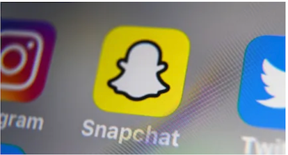
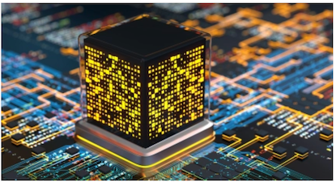
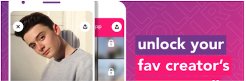

The Latest
Snapchat says its getting better at finding illicit drug dealers before users do
Taylor Hatmaker
11:15 AM PST · January 18, 2012Snapchat has faced increasing criticism in recent years as the opioid crisis plays out on social media, often with tragic results. In October, an NBC investigation reported the stories of a number ...
Will Quantum computing remain the domain of the specialist VC
Maria Lepskaya
11:06 AM PST · January 18, 2012Despite all the buzz, quantum investments are still not mainstream: there were about 90 quantum investments in 2021.
Ex-Dispo founding members launch roll app, where creates post exclusive products.
11:15 AM PST · January 18, 2012Today marks the launch of the roll app, which aims to create an easy way for creators to make an extra buck while portraying a potentially more authentic of themselves to their fans. Already ...
